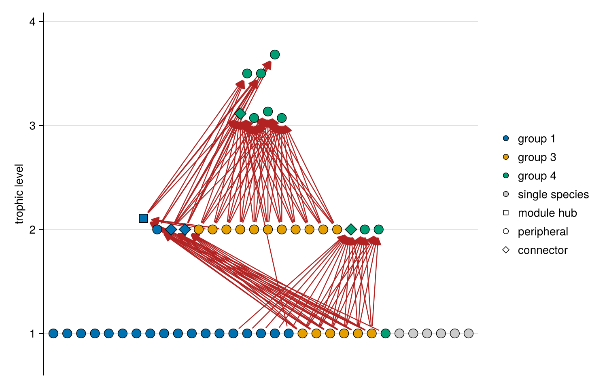
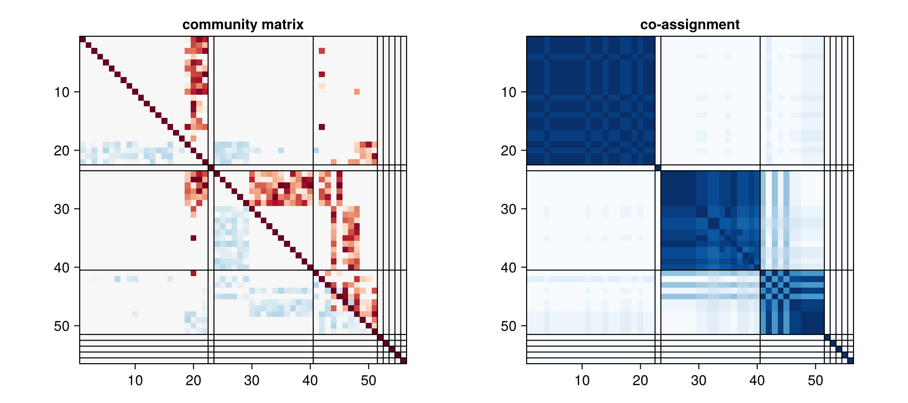
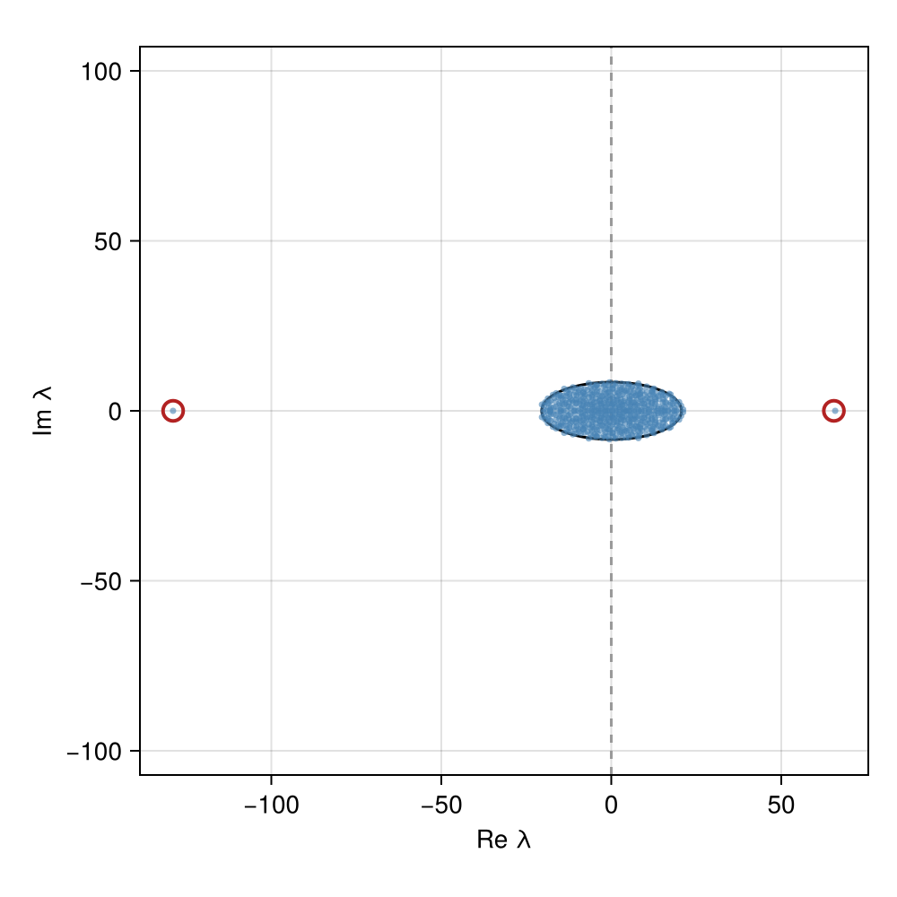

Compartments
Compartments are groups of species that interact more among themselves than with others. In real food webs they are mostly energy channels and habitat splits, and their modularity is close to what the generalized niche model predicts (Guimerà et al. 2010). They limit how far extinctions and perturbations spread (Stouffer & Bascompte 2011), while the effect of block structure on the eigenvalues of a community matrix depends on the sign and strength of the links between the compartments (Grilli, Rogers & Allesina 2016).
web_modularity scores a partition of a web, or of a weight matrix such as energy fluxes, by how many more links fall inside the groups than expected from the species' degrees. Its directed form (Leicht & Newman 2008) is the default; the undirected form of Newman & Girvan (2004) is the one most published food web values use.
using FoodWebs
# two food chains, 1 → 2 → 3 and 4 → 5 → 6, joined by a top predator 7 that eats 3 and 6
web = falses(7, 7)
for (prey, predator) in [(1, 2), (2, 3), (4, 5), (5, 6), (3, 7), (6, 7)]
web[prey, predator] = true
end
channels = [1, 1, 1, 2, 2, 2, 3]
layers = [1, 2, 3, 1, 2, 3, 3]
web_modularity(web, channels), web_modularity(web, layers)(0.3333333333333333, 3.700743415417188e-17)The two channels score 1/3. Grouping by trophic layer scores no better than chance here, as every link runs between the groups. Grouping the Tuesday Lake web by the category of each species (producers, invertebrates and vertebrate ectotherms), which follows its trophic layers, scores below zero:
fw = foodweb("cheddar/tl84")
web_modularity(fw, fw.traits["category"]), web_modularity(fw, fw.traits["category"]; directed = false)(-0.05558425160697913, -0.22634727961432433)The resolution γ (Reichardt & Bornholdt 2006) sets the size of the groups that modularity favours; values above 1 favour smaller groups. The modularity of a web's best partition is never negative and is high even for random webs (Guimerà, Sales-Pardo & Amaral 2004), so its significance has to be judged against null webs.
Finding compartments
compartments searches for a partition of high modularity, by the Louvain method or by simulated annealing, and combines repeated searches by consensus. In the two-chain web the best partition puts the top predator with the top of one chain, which scores slightly more than the two channels:
using Random: Xoshiro
compartments(Xoshiro(1), web)(groups = [1, 1, 2, 3, 3, 3, 2], modularity = 0.36111111111111116, best = [1, 1, 2, 3, 3, 3, 2], run_modularity = [0.36111111111111116, 0.36111111111111116, 0.36111111111111116, 0.36111111111111116, 0.36111111111111116, 0.36111111111111116, 0.36111111111111116, 0.36111111111111116, 0.36111111111111116, 0.36111111111111116], coassignment = [1.0 1.0 … 0.0 0.0; 1.0 1.0 … 0.0 0.0; … ; 0.0 0.0 … 1.0 0.2; 0.0 0.0 … 0.2 1.0])Many partitions of a real web have nearly the highest modularity (Good, de Montjoye & Clauset 2010), so a single search is one of many answers. The modularity of each search and the fraction of searches that put each pair of species together show how well defined the compartments are:
r = compartments(Xoshiro(2026), fw; runs = 20)
maximum(r.groups), r.modularity, extrema(r.run_modularity)(9, 0.27825126262626204, (0.2571166207529843, 0.27825126262626204))# the fraction of species pairs whose grouping differs between searches
count(x -> 0 < x < 1, r.coassignment) / length(r.coassignment)0.3475765306122449Three views of a compartment
Guimerà et al. (2010) define a compartment in three ways: species densely linked to each other (view = :density, the default), species that share many prey (:predator), and species that share many predators (:prey), the last two by the bipartite modularity of Guimerà, Sales-Pardo & Amaral (2007). The density view finds energy channels, which follow the sink webs; the predator and prey views find guilds of species at similar trophic levels, which cut across the sink webs, as Guimerà et al. found. Species with no prey (or no predators) share them with no one and stay alone in the predator (prey) view:
binary = first(remove_cannibalism(fw)) .!= 0
map((:density, :predator, :prey)) do view
r = compartments(Xoshiro(2026), binary; view, runs = 20)
h = compartment_homogeneity(binary, r.best)
(; view, Q = round(maximum(r.run_modularity); digits = 3), groups = maximum(r.best),
trophic = round(h.trophic; digits = 1), sink = round(h.sink; digits = 1))
end((view = :density, Q = 0.278, groups = 9, trophic = 3.1, sink = 39.2), (view = :predator, Q = 0.521, groups = 34, trophic = 9.4, sink = -14.0), (view = :prey, Q = 0.448, groups = 9, trophic = 6.7, sink = -30.5))Significance against null webs
Random webs reach high modularity from fluctuations alone (Guimerà, Sales-Pardo & Amaral 2004), so modularity_zscore runs the same search on every null web and compares the best modularity found. Against webs rewired to keep each species' links, Tuesday Lake is strongly compartmented; against the niche model it is less modular, and against the generalized niche model, whose diets need not be contiguous, it is typical, as Guimerà et al. (2010) found for other food webs:
rewired = modularity_zscore(Xoshiro(1), fw; samples = 50)
niche = modularity_zscore(Xoshiro(1), fw; samples = 50, null = niche_network)
generalized = modularity_zscore(Xoshiro(1), fw; samples = 50,
null = (rng, S, C) -> generalized_niche_network(rng, S, C, 0.6))
[(null, round(r.mean; digits = 3), round(r.z; digits = 1)) for (null, r) in
(("rewired", rewired), ("niche", niche), ("generalized niche", generalized))]3-element Vector{Tuple{String, Float64, Float64}}:
("rewired", 0.18, 12.9)
("niche", 0.357, -2.5)
("generalized niche", 0.269, 0.6)rewired.observed0.27825126262626204Species roles and homogeneity
species_roles places each species by its within-module degree z and its participation coefficient P, the spread of its links over the groups (Guimerà & Amaral 2005). Connectors, with P > 0.62, link compartments, and in Tuesday Lake they sit higher in the web than the peripheral species:
groups = compartments(Xoshiro(2026), fw; runs = 20).best
roles = species_roles(fw, groups)
levels = trophic_levels(fw)
[(role, count(==(role), roles.role), round(sum(levels[roles.role .== role]) / count(==(role), roles.role); digits = 2))
for role in unique(roles.role)]3-element Vector{Tuple{Symbol, Int64, Float64}}:
(:peripheral, 51, 1.55)
(:connector, 4, 2.28)
(:module_hub, 1, 2.11)compartment_homogeneity measures whether compartments follow trophic levels and sink webs (Guimerà et al. 2010). Tuesday Lake's compartments follow its sink webs, the energy channels from the basal species up; its species categories follow trophic levels instead and cut across the sink webs:
compartment_homogeneity(fw, groups), compartment_homogeneity(fw, fw.traits["category"])((trophic = 3.057141154395121, sink = 39.21807814087088), (trophic = 8.13713623673124, sink = -49.53233433742865))Links between compartments
The effect of compartments on the eigenvalues of a community matrix depends on the links between them: the mean of the between-group entries sets the outlier eigenvalues, and their variance and pair correlation the bulk (Grilli, Rogers & Allesina 2016). block_structure splits a community or flux matrix into these within- and between-group statistics, with the kinds of pairs in each block and, for each species, the share of its interaction magnitude with other groups. For a random community matrix on Tuesday Lake, 113 of the 263 predator–prey pairs cross compartments:
using Distributions: Uniform
web = PredationMatrix(first(remove_cannibalism(fw)) .!= 0)
J = random_predprey(Xoshiro(1), web, Uniform(0, 1), 0.3)
blocks = block_structure(J, groups)
k = length(blocks.sizes)
within = sum(blocks.predator_prey[r, r] for r in 1:k)
between = sum(blocks.predator_prey[r, s] for r in 1:k for s in (r + 1):k)
within, between(149, 114)The 33 coupling species span the web, from basal species eaten in several compartments to consumers at trophic level 3.7; the species with no links outside their compartment are all basal:
couplers = blocks.coupling .> 0
count(couplers), extrema(levels[couplers]), extrema(levels[.!couplers])(37, (1.0, 3.681534735106165), (1.0, 1.0))Groups beyond compartments
Modularity finds only compartments, groups linked mostly among themselves. The group model of Allesina & Pascual (2009) is a stochastic block model: a species of group r is eaten by one of group s with probability p[r, s]. Dense blocks on the diagonal of p are compartments; dense blocks off it are guilds, species that eat the same prey or are eaten by the same predators. fit_group_model searches for the partition of highest likelihood for each number of groups and selects the number by the integrated classification likelihood, which, unlike the AIC of the paper, picks one group for a random web. Tuesday Lake divides into trophic guilds: two basal groups, two of herbivores and two of predators, with the dense blocks above the diagonal:
model = fit_group_model(Xoshiro(2026), binary; k = 1:8)
model.k, [round(sum(levels[model.groups .== r]) / count(==(r), model.groups); digits = 1) for r in 1:model.k](6, [1.0, 1.0, 2.0, 2.0, 3.1, 3.6])round.(model.p; digits = 2)6×6 Matrix{Float64}:
0.0 0.0 0.01 0.44 0.01 0.0
0.0 0.0 1.0 1.0 0.0 0.0
0.0 0.0 0.0 0.05 1.0 0.0
0.0 0.0 0.0 0.0 0.35 1.0
0.0 0.0 0.0 0.0 0.44 1.0
0.0 0.0 0.0 0.0 0.0 0.22Groups of a community matrix
The group model uses only which species interact. block_model adds the strengths: an entry between groups r and s is nonzero with probability p[r, s] and then normal with mean μ[r, s] and standard deviation σ[r, s], separately in each direction, the inferential counterpart of block_structure. fit_block_model selects the number of groups by the integrated classification likelihood. In the random community matrix of Tuesday Lake it finds groups by trophic level, with negative means above the diagonal (predators on their prey) and positive means below it (prey on their predators):
blocks = fit_block_model(Xoshiro(2), J; k = 1:8)
rounded = round.(levels)
[(group = g, levels = [count(i -> blocks.groups[i] == g && rounded[i] == l, eachindex(levels)) for l in 1:4]) for g in 1:blocks.k]6-element Vector{@NamedTuple{group::Int64, levels::Vector{Int64}}}:
(group = 1, levels = [25, 0, 0, 0])
(group = 2, levels = [6, 0, 0, 0])
(group = 3, levels = [0, 13, 0, 0])
(group = 4, levels = [0, 5, 0, 0])
(group = 5, levels = [0, 0, 4, 0])
(group = 6, levels = [0, 0, 2, 1])round.(blocks.μ; digits = 2)6×6 Matrix{Float64}:
0.0 0.0 -0.29 -0.55 -0.43 0.0
0.0 0.0 -0.49 -0.49 0.0 0.0
0.25 0.15 0.0 -0.64 -0.49 0.0
0.16 0.18 0.18 0.0 -0.36 -0.35
0.11 0.0 0.17 0.15 -0.27 -0.36
0.0 0.0 0.0 0.13 0.12 -0.13Energy channels
Energy channels are an ecological definition of compartments: the pathways of energy from each basal source up the web (Moore & Hunt 1988). source_reliance gives the fraction of each species' energy that comes from each source, following its diet (Rooney et al. 2008), and energy_channels puts each species in the channel of the source it relies on most, then merges channels while modularity rises (Zhao et al. 2018). In two chains joined by a top predator that takes three times as much from the first, the predator gets three quarters of its energy from the first source and joins its channel:
F = zeros(7, 7)
F[1, 2] = F[2, 3] = F[4, 5] = F[5, 6] = 1
F[3, 7], F[6, 7] = 3, 1
channels = energy_channels(F)
channels.groups, channels.reliance[7, :]([1, 1, 1, 2, 2, 2, 1], [0.75, 0.25])In Tuesday Lake, the channels from its 31 basal species merge into eight, about half as modular as the partition of highest modularity, which need not follow the flow of energy:
channels = energy_channels(binary)
(channels = (maximum(channels.groups), round(channels.modularity; digits = 3)),
highest = (maximum(groups), round(web_modularity(binary, groups); digits = 3)))(channels = (8, 0.145), highest = (9, 0.278))Compartments of interaction strengths
Modularity needs non-negative weights, and a community matrix is signed: a predator–prey pair has one negative and one positive entry. pair_weights gives each pair a symmetric weight, √|J_ij J_ji| by default, which does not depend on the abundance units of each species, or |J_ij| + |J_ji|. Two nulls then separate the sources of compartments: rewiring tests the topology, and shuffle_weights (null = :shuffle) permutes the strengths among the interacting pairs, testing whether they are arranged in compartments beyond what the topology gives. In the random community matrix of Tuesday Lake the topology is strongly compartmented, but the strengths, drawn independently, add nothing:
W = pair_weights(J)
strengths = modularity_zscore(Xoshiro(2), W; null = :shuffle, samples = 30, runs = 3)
topology = modularity_zscore(Xoshiro(2), web; samples = 30, runs = 3)
(strengths = round(strengths.z; digits = 2), topology = round(topology.z; digits = 1))(strengths = -0.19, topology = 13.6)Signed modularity
pair_weights(J; method = :signed) keeps the sign of each pair, sign(J_ij J_ji) √|J_ij J_ji|: negative for predator–prey pairs, positive for competition and mutualism. The signed modularity of Gómez, Jensen & Arenas (2009) (signed = true) rewards positive pairs within groups and negative pairs between them. In a purely trophic community matrix every pair is negative, so it finds the anti-modular structure of Grilli, Rogers & Allesina (2016): in Tuesday Lake, two groups that alternate up the trophic levels, basal species with the third level and herbivores with the fourth, with nearly every predator–prey pair between them:
signed_weights = pair_weights(J; method = :signed)
s = compartments(Xoshiro(2), signed_weights; signed = true, method = :annealing, runs = 3)
[(group = g, levels = [count(i -> s.groups[i] == g && rounded[i] == l, eachindex(levels)) for l in 1:4]) for g in 1:maximum(s.groups)]2-element Vector{@NamedTuple{group::Int64, levels::Vector{Int64}}}:
(group = 1, levels = [25, 0, 6, 0])
(group = 2, levels = [6, 18, 0, 1])Block-structured random matrices
block_random_matrix draws community matrices whose species fall into groups, with the connectance, means, spreads and pair correlation of each pair of groups set separately; the means may differ by direction, as when one group eats another. modular_random_matrix is the two-group case of Grilli, Rogers & Allesina (2016), set by the overall connectance and the modularity Q through modular_connectances. block_spectrum predicts the eigenvalues from the block moments: a bulk from the variances and pair correlations, and outliers from the means.
The ratio of the predicted spectral abscissa with block structure to that without shows the regimes of Grilli et al.: with a negative mean interaction, modularity stabilizes slightly and anti-modularity (Q < 0) destabilizes strongly; with a positive mean, block structure is neutral for two groups of equal size, since the leading outlier (S/2)(μ_w + |μ_b|) is then SCμ for every Q, and destabilizing for unequal groups:
function ratio(Q, μ, α; S = 1000, C = 0.2)
n = round(Int, α * S)
predicted(q) = let (Cw, Cb) = modular_connectances(C, q, α)
block_spectrum([n, S - n]; connectance = [Cw Cb; Cb Cw], μ).abscissa
end
return predicted(Q) / predicted(0.0)
end
[(μ, α, [round(ratio(Q, μ, α); digits = 2) for Q in (-0.3, -0.1, 0.1, 0.3)])
for (μ, α) in ((-1.0, 0.5), (-1.0, 0.25), (1.0, 0.5), (1.0, 0.25))]4-element Vector{Tuple{Float64, Float64, Vector{Float64}}}:
(-1.0, 0.5, [4.39, 1.6, 1.0, 0.97])
(-1.0, 0.25, [3.89, 1.39, 1.0, 0.97])
(1.0, 0.5, [1.0, 1.0, 1.0, 1.0])
(1.0, 0.25, [1.05, 1.01, 1.01, 1.12])The predictions also apply to a sampled matrix and its groups, from the moments of block_structure:
using LinearAlgebra: eigvals
M = block_random_matrix(Xoshiro(3), [300, 500]; connectance = [0.15 0.1; 0.1 0.2],
μ = [-0.3 -1.5; 1.0 -0.3], ρ = -0.4, diagonal = -1)
p = block_spectrum(M, [fill(1, 300); fill(2, 500)])
p.outliers, p.abscissa, maximum(real, eigvals(M))(Float64[], 5.28245327174782, 5.469134132429686)Drawing compartments
With Makie loaded, foodwebplot colours species by group, keeps each group together within its trophic band, draws the links between groups in red, and marks species roles by shape; show_within = false keeps only the coupling links:
using CairoMakie
fig, ax = foodwebplot(binary; groups, roles = roles.role, show_within = false, labels = nothing,
size = (750, 480))
fig
blockplot orders a matrix by group and draws the block boundaries, here the random community matrix of Tuesday Lake from above and the co-assignment of 20 searches:
r = compartments(Xoshiro(2026), fw; runs = 20)
fig = Figure(size = (900, 400))
blockplot!(Axis(fig[1, 1]; title = "community matrix", aspect = DataAspect(), yreversed = true), J, groups)
blockplot!(Axis(fig[1, 2]; title = "co-assignment", aspect = DataAspect(), yreversed = true), r.coassignment, r.groups)
fig
eigenplot with groups draws the bulk and outliers of block_spectrum in place of the elliptic law, here for an anti-modular matrix whose outlier to the right sets its stability:
M = modular_random_matrix(Xoshiro(4), 600; α = 0.25, C = 0.2, Q = -0.3, μ = -1.0)
fig, ax = eigenplot(M; groups = [fill(1, 150); fill(2, 450)])
fig
FoodWebs.blockplot — Function
blockplot(M, groups; size = (520, 450), title = "", colormap, linecolor = :black, linewidth = 1)
blockplot!(ax, M, groups; colormap, linecolor = :black, linewidth = 1)A heatmap of the square matrix M (a web, a community matrix or the coassignment of compartments) with the species ordered by group, groups in order of first appearance in groups, and lines at the boundaries between groups, so that block structure shows as blocks (Guimerà et al. 2010, Fig. 1D). Rows run down and columns across, as the matrix is written. A matrix with negative entries gets a diverging colour scale symmetric about 0 (:RdBu), any other a sequential one (:Blues). Requires Makie: load a Makie backend such as CairoMakie to enable it. blockplot returns the figure and axis, with a colour bar; blockplot! draws into an existing axis and returns the heatmap.
FoodWebs.blockplot! — Function
blockplot!(ax, M, groups; kwargs...)Draw blockplot into the Makie axis ax.
FoodWebs.web_modularity — Function
web_modularity(W, groups; view = :density, directed = true, γ = 1, signed = false)The modularity of the partition groups (one label per species) of the web or non-negative weight matrix W, where W[i, j] is the link from prey i to predator j, such as an energy flux. Cannibalistic links (the diagonal) are left out. Guimerà et al. (2010) define compartments in three ways, chosen by view.
view = :density, species densely linked to each other. With directed = true, the directed modularity of Leicht & Newman (2008), weighted as in Arenas et al. (2007),
Q = (1/W) Σ_ij [W_ij − γ s_i^out s_j^in / W] δ(g_i, g_j),where s_i^out = Σ_j W_ij, s_j^in = Σ_i W_ij and W = Σ_ij W_ij; Q is the same for W and its transpose, so the direction convention does not matter. With directed = false, the modularity of Newman & Girvan (2004) on the undirected web W + Wᵀ,
Q = (1/2m) Σ_ij [A_ij − γ k_i k_j / 2m] δ(g_i, g_j),in which each link counts once, so that two species that eat each other are joined by two links.
view = :predator, species that share many prey, and view = :prey, species that share many predators: the bipartite modularity of Guimerà, Sales-Pardo & Amaral (2007), with each prey's set of predators (or each predator's set of prey) as a team,
M = Σ_s [ Σ_{i ≠ j ∈ s} c_ij / Σ_a m_a(m_a − 1) − γ Σ_{i ≠ j ∈ s} t_i t_j / L² ],where c_ij counts the prey (predators) that i and j share, t_i the prey (predators) of i, m_a the predators of prey a (the prey of predator a) and L the links. The two views differ for a web and agree for a symmetric one. These views need a binary web and ignore directed.
signed = true (density view) allows negative weights, such as the signed pair weights of pair_weights, with the signed modularity of Gómez, Jensen & Arenas (2009),
Q = (1/(W⁺ + W⁻)) Σ_ij [W_ij − γ (s⁺_i^out s⁺_j^in / W⁺ − s⁻_i^out s⁻_j^in / W⁻)] δ(g_i, g_j),with s⁺, W⁺ and s⁻, W⁻ the strengths and totals of the positive and negative parts. It rewards positive weights within groups and negative weights between them, and equals (W⁺ Q⁺ − W⁻ Q⁻) / (W⁺ + W⁻) for the modularities Q⁺ and Q⁻ of the two parts; without negative weights it is the modularity above.
γ is the resolution of Reichardt & Bornholdt (2006): larger values favour smaller groups. Q is 0 for a single group in the density view and for a web without links.
Leicht, E. A. & Newman, M. E. J. Community structure in directed networks. Phys. Rev. Lett. 100, 118703 (2008). Arenas, A., Duch, J., Fernández, A. & Gómez, S. Size reduction of complex networks preserving modularity. New J. Phys. 9, 176 (2007). Newman, M. E. J. & Girvan, M. Finding and evaluating community structure in networks. Phys. Rev. E 69, 026113 (2004). Gómez, S., Jensen, P. & Arenas, A. Analysis of community structure in networks of correlated data. Phys. Rev. E 80, 016114 (2009). Guimerà, R., Sales-Pardo, M. & Amaral, L. A. N. Module identification in bipartite and directed networks. Phys. Rev. E 76, 036102 (2007). Guimerà, R. et al. Origin of compartmentalization in food webs. Ecology 91, 2941–2951 (2010). Reichardt, J. & Bornholdt, S. Statistical mechanics of community detection. Phys. Rev. E 74, 016110 (2006).
FoodWebs.compartments — Function
compartments([rng], W; view = :density, directed = true, γ = 1, signed = false, method = :louvain,
runs = 10, threshold = 0.5)A partition of the species of the web or non-negative weight matrix W (W[i, j] the link from prey i to predator j) of high modularity, as scored by web_modularity with the same view, directed, γ and signed. Returns a named tuple:
groups: the consensus partition, labelled1, 2, …in order of first appearance;modularity: its modularity;best: the partition of highest modularity among the searches, labelled the same way;run_modularity: the modularity of each of therunsindependent searches;coassignment: the fraction of those searches that put each pair of species in one group.
Each search uses method:
:louvain, the Louvain method (Blondel et al. 2008), in its directed form (Dugué & Perez 2015) whendirected = true, fast enough for any web;:annealing, simulated annealing (Guimerà & Amaral 2005), with moves of single species and merges of groups, followed by a greedy pass; slower, and a check on the Louvain result.
After each search, groups that fall apart into unlinked pieces are split, which never lowers the modularity, so that every group is connected (in the predator and prey views, through shared prey or predators); signed modularity can fall when a group is split, so its groups are not refined. For signed modularity, Louvain can stop a few percent short of the best partition; use method = :annealing. Many partitions have nearly the highest modularity (Good, de Montjoye & Clauset 2010), so compartments combines the searches by consensus clustering (Lancichinetti & Fortunato 2012): it keeps the pairs that at least threshold of the searches put together, searches that co-assignment matrix again, and repeats until every search agrees. If they still disagree after 20 rounds, the partition of highest modularity among the last searches is returned. The spread of run_modularity and the entries of coassignment between 0 and 1 show how well defined the compartments are. On weakly modular webs the searches disagree, and the consensus, which keeps what they share, can score well below best. On the bundled webs small enough to solve exactly (10 cases), the best of 10 searches came within 0.005 of the maximum modularity by either method, and within 0.001 by the better of the two.
Blondel, V. D., Guillaume, J.-L., Lambiotte, R. & Lefebvre, E. Fast unfolding of communities in large networks. J. Stat. Mech. P10008 (2008). Dugué, N. & Perez, A. Directed Louvain: maximizing modularity in directed networks. hal-01231784 (2015). Guimerà, R. & Amaral, L. A. N. Functional cartography of complex metabolic networks. Nature 433, 895–900 (2005). Good, B. H., de Montjoye, Y.-A. & Clauset, A. Performance of modularity maximization in practical contexts. Phys. Rev. E 81, 046106 (2010). Lancichinetti, A. & Fortunato, S. Consensus clustering in complex networks. Sci. Rep. 2, 336 (2012).
FoodWebs.modularity_zscore — Function
modularity_zscore([rng], web; null = :rewire, samples = 100, swaps = 10 * L, view = :density,
directed = true, γ = 1, method = :louvain, runs = 5)How much more modular web is than webs from a null model, with the modularity of each web, in the view of web_modularity, the highest found by compartments in runs searches by method. Random webs have high modularity from fluctuations alone (Guimerà, Sales-Pardo & Amaral 2004), so the same search runs on every null web: comparing null webs on the partition found for web would bias the test towards significance.
null = :rewire:rewire_linkswithswapsswaps, keeping each species' numbers of prey and predators and of one-way and two-way links;null = :shuffle: the weights of a weight matrix, such aspair_weightsof a community matrix, permuted at random among its links (among pairs when it is symmetric), keeping the topology; this tests whether the strengths are arranged in compartments beyond what the topology gives;null = f, a functionf(rng, S, C)returning a web withSspecies and connectance aboutC, such asniche_network,cascade_networkor(rng, S, C) -> generalized_niche_network(rng, S, C, 0.6): a structural model at the species richness and connectance ofweb. Guimerà et al. (2010) found that empirical food webs are no more modular than the generalized niche model.
Returns a named tuple: the observed modularity and its partition groups, the modularity of each null web null_modularity, their mean and sd, z = (observed − mean) / sd (NaN when sd is 0), and p, the fraction of null webs at least as modular as web.
Guimerà, R., Sales-Pardo, M. & Amaral, L. A. N. Modularity from fluctuations in random graphs and complex networks. Phys. Rev. E 70, 025101 (2004). Guimerà, R. et al. Origin of compartmentalization in food webs. Ecology 91, 2941–2951 (2010).
FoodWebs.species_roles — Function
species_roles(W, groups; links = :all)The role of each species in the partition groups of the web or non-negative weight matrix W (W[i, j] the link from prey i to predator j), from its links: all of them (links = :all, counting each link once), those to its prey (:prey) or those to its predators (:predators). With weights, the counts below are sums of weights (strengths). Cannibalistic links are left out. Returns a named tuple:
z: the within-module degree,z_i = (κ_i − κ̄) / σ_κ, whereκ_icounts the links ofito other members of its group andκ̄andσ_κare the mean and standard deviation ofκin the group, with the sample standard deviation as inczvaluesof the R package bipartite; 0 whenσ_κis 0 or undefined, as in groups of one species;P: the participation coefficient,P_i = 1 − Σ_s (κ_is / k_i)², whereκ_iscounts the links ofito groupsandk_iall its links; 0 near the group's own links only and close to 1 when spread evenly over all groups; 0 for a species without links;role: the classes of Olesen et al. (2007)::peripheral(z ≤ 2.5,P ≤ 0.62),:connector(z ≤ 2.5,P > 0.62),:module_hub(z > 2.5,P ≤ 0.62) and:network_hub(z > 2.5,P > 0.62);cartography: the seven roles of Guimerà & Amaral (2005), for non-hubs (z < 2.5):ultra_peripheral(P ≤ 0.05),:peripheral(P ≤ 0.62),:connector(P ≤ 0.80) and:kinless(P > 0.80), and for hubs (z ≥ 2.5):provincial_hub(P ≤ 0.30),:connector_hub(P ≤ 0.75) and:kinless_hub(P > 0.75).
Connectors, the species with high P, are the species that link compartments.
Guimerà, R. & Amaral, L. A. N. Functional cartography of complex metabolic networks. Nature 433, 895–900 (2005). Olesen, J. M., Bascompte, J., Dupont, Y. L. & Jordano, P. The modularity of pollination networks. Proc. Natl Acad. Sci. USA 104, 19891–19896 (2007).
FoodWebs.compartment_homogeneity — Function
compartment_homogeneity(web, groups; levels = trophic_levels(web))How far the compartments groups of web follow trophic structure, as the trophic-level and sink homogeneity of Guimerà et al. (2010), each a z-score against random partitions with the same group sizes. Positive values mean more homogeneous than chance. Returns a named tuple:
trophic:H_t = (⟨B⟩ − B) / σ_B, whereBcounts the boundaries between groups along the species sorted bylevels; compartments of contiguous trophic levels have few boundaries. Species with equal levels are ordered at random, andBis its mean over those orderings.sink:H_s = Σ_i (o_i − ⟨o_i⟩) / σ_{o_i}, whereo_icounts the other members of speciesi's group that are in its sink web (its prey, their prey and so on); species whoseo_icannot vary are left out.
The means and standard deviations over random partitions are exact.
Guimerà, R. et al. Origin of compartmentalization in food webs. Ecology 91, 2941–2951 (2010).
FoodWebs.block_structure — Function
block_structure(M, groups)The within- and between-group structure of a community (Jacobian) matrix or flux matrix M for the partition groups, the quantities that set the eigenvalues of block-structured random matrices: the mean of the entries between two groups sets the outlier eigenvalues, and their variance and pair correlation the bulk (Grilli, Rogers & Allesina 2016). Groups are ordered by first appearance in groups. Returns a named tuple of k × k matrices over pairs of groups (r, s), for the off-diagonal entries M[i, j] with i in r and j in s:
connectance: the fraction of nonzero entries;mean,variance: their mean and population variance, counting zero entries, as inelliptic_law, so that a block with nonzero entries of meanμand varianceσ²at connectanceChas meanCμand varianceC(σ² + μ²) − C²μ²;correlation: the correlation of the pairs(M[i, j], M[j, i]), with the geometric mean of the two variances in the denominator as inelliptic_law(NaNwhen either is 0);predator_prey,competition,mutualism,one_way: the numbers of pairs with entries of opposite sign, both negative, both positive, and one zero, symmetric inrands;
and, for the groups and the species:
labels,sizes: the groups and their numbers of species;diagonal: the mean diagonal entry of each group;coupling: for each species, the share of its interaction magnitude,Σ_j |M[i, j]| + |M[j, i]|overj ≠ i, that is with other groups; the coupling species are those withcoupling > 0.
With one group, mean and correlation are those of elliptic_law.
Grilli, J., Rogers, T. & Allesina, S. Modularity and stability in ecological communities. Nat. Commun. 7, 12031 (2016).
FoodWebs.group_model — Function
group_model(web, groups)The group model of Allesina & Pascual (2009) for the partition groups of the binary web (web[i, j] the link from prey i to predator j): a directed stochastic block model in which a species of group r is eaten by a species of group s with probability p[r, s], independently for each of the S² ordered pairs (cannibalism included, as in the connectance L / S²). Returns a named tuple with the maximum likelihood probabilities p[r, s] = L_rs / (S_r S_s), groups in order of first appearance in groups (labels), the log-likelihood
log L = Σ_rs [L_rs log p_rs + (S_r S_s − L_rs) log(1 − p_rs)],with 0 log 0 = 0, the Akaike information criterion of the paper, AIC = 2k² + 2S − 2 log L for k groups, and the integrated classification likelihood of Daudin, Picard & Robin (2008),
ICL = log L + Σ_r S_r log(S_r / S) − (k² / 2) log S² − ((k − 1) / 2) log S,which also counts the assignment of species to groups. Dense blocks on the diagonal of p are compartments; dense blocks off it are groups of species that eat the same prey or are eaten by the same predators, such as trophic guilds, which modularity does not detect. Degree correction (Karrer & Newman 2011) is not included.
Allesina, S. & Pascual, M. Food web models: a plea for groups. Ecol. Lett. 12, 652–662 (2009). Daudin, J.-J., Picard, F. & Robin, S. A mixture model for random graphs. Stat. Comput. 18, 173–183 (2008).
FoodWebs.fit_group_model — Function
fit_group_model([rng], web; k = 1:min(S, 10), criterion = :icl, runs = 5, cooling = 0.98, sweeps = 20)The partition of the binary web into k groups of highest likelihood under the group_model, or, for a range of k, the one chosen by criterion: the highest ICL (:icl, the default) or the lowest AIC (:aic, the criterion of Allesina & Pascual 2009). The AIC of the paper charges 2k² for the probabilities but nothing for choosing the partition, whose 2S term is the same for every k, so a search over partitions fits noise: on random webs it keeps adding groups. The ICL counts the assignment of species to groups and selects one group for a random web, as the R package sbm does. For each k, runs searches by simulated annealing, with moves of single species between groups, are followed by moves that raise the likelihood until none does; the best is kept. Allesina & Pascual (2009) used a genetic algorithm with hill climbing for the same objective. Returns the named tuple of group_model for the selected partition, with its groups (labelled 1, 2, … in order of first appearance), its k, and criterion_by_k, the value of the criterion for the best partition found for each k tried.
FoodWebs.block_model — Function
block_model(M, groups)A stochastic block model with normal weights for the off-diagonal entries of a signed matrix M, such as a community matrix, for the partition groups: an entry M[i, j], i in group r and j in group s, is nonzero with probability p[r, s], and a nonzero entry is normal with mean μ[r, s] and standard deviation σ[r, s], the inferential counterpart of block_structure and block_random_matrix (after the weighted block models of Aicher, Jacobs & Clauset 2015 and Peixoto 2018). μ[r, s] and μ[s, r] are separate, so the effects of predators on prey and of prey on predators have their own means. The diagonal is not modelled, and the entries are independent: the two entries of a pair, which in a community matrix are nonzero together, count as two observations, which overstates the evidence for groups in the pattern of nonzero entries. Returns a named tuple with the labels of the groups (in order of first appearance), p, μ, σ, the log-likelihood and the integrated classification likelihood
ICL = log L + Σ_r S_r log(S_r / S) − (k² / 2) log m − (2k² / 2) log L − ((k − 1) / 2) log S,with m = S(S − 1) entries and L nonzero entries (Daudin, Picard & Robin 2008). The variances are shrunk towards the variance s₀² of all nonzero entries, σ² = (Σ (x − μ)² + s₀²) / (L_rs + 1), so that blocks of one or two entries have a finite likelihood; blocks without nonzero entries take μ = 0 and σ = s₀.
Aicher, C., Jacobs, A. Z. & Clauset, A. Learning latent block structure in weighted networks. J. Complex Netw. 3, 221–248 (2015). Peixoto, T. P. Nonparametric weighted stochastic block models. Phys. Rev. E 97, 012306 (2018).
FoodWebs.fit_block_model — Function
fit_block_model([rng], M; k = 1:min(S, 8), runs = 5, cooling = 0.98, sweeps = 20)The partition of the species of the signed matrix M of highest likelihood under the block_model for each number of groups in k, by simulated annealing with moves of single species followed by moves that raise the likelihood until none does, and the number of groups of highest ICL. Returns the named tuple of block_model for the selected partition, with its groups (labelled 1, 2, … in order of first appearance), its k, and icl_by_k.
FoodWebs.source_reliance — Function
source_reliance(W; sources = basal species)The fraction of the energy of each species that comes from each basal source, the reliance of Rooney et al. (2008) used by Zhao et al. (2018), for the web or flux matrix W (W[i, j] the flux from prey i to predator j). Returns an S × B matrix, one row per species and one column per source in sources (by default the species that eat nothing; give them to include detritus that receives inputs, for example). A source relies only on itself, and every other species on its prey in proportion to its diet,
R_i = Σ_k p_ki R_k, p_ki = W_ki / Σ_l W_li,so R = (I − Pᵀ)⁻¹ E with E the indicator of the sources. In a binary web the diet is split equally among the prey. Rows sum to 1. Cannibalistic links are left out. Throws an ArgumentError if some species get no energy from any source, or if the system is singular, as for a feeding loop that no source enters.
Rooney, N., McCann, K. S. & Moore, J. C. A landscape theory for food web architecture. Ecol. Lett. 11, 867–881 (2008). Zhao, L., Zhang, H., Tian, W. & Xu, X. Identifying compartments in ecological networks based on energy channels. Ecol. Evol. 8, 309–318 (2018).
FoodWebs.energy_channels — Function
energy_channels(W; sources = basal species, merge = true, γ = 1)Compartments as energy channels (Zhao et al. 2018): each species joins the channel of the source it relies on most (source_reliance; ties go to the first source), and then, with merge = true, the two channels whose merging raises the directed modularity of W (web_modularity, resolution γ) the most are merged, until no merging raises it. Returns a named tuple: the channels groups, labelled 1, 2, … in order of first appearance, their modularity, the reliance matrix and the dominant source of each species (an index into sources).
The channels follow the flow of energy from the sources, an ecological definition to compare with the partitions of highest modularity from compartments. With its non-living carbon pools and the species that eat nothing as sources, the Chesapeake Bay network reproduces the worked example of Zhao et al. (2018): the same main source for every consumer, the same three channels and Q = 0.39.
FoodWebs.pair_weights — Function
pair_weights(J; method = :geometric)Symmetric weights for the pairs of species of a community (Jacobian) matrix J, for web_modularity, compartments and modularity_zscore. Modularity needs non-negative weights, and the signed entries of J do not give them: a predator–prey pair has one negative and one positive entry, and their sum J_ij + J_ji cancels strong trophic links. The weight of the pair (i, j) is
method = :geometric:√|J_ij J_ji|, unchanged by rescaling the abundance units of any species (J → D J D⁻¹for diagonalD), as for feasible communitiesJ = diag(x) A; a pair with only one nonzero entry, such as a donor-controlled link, gets weight 0;method = :sum:|J_ij| + |J_ji|, which keeps one-way pairs and reduces to the binary web when every magnitude is equal;method = :signed:sign(J_ij J_ji) √|J_ij J_ji|, negative for predator–prey pairs and positive for competition and mutualism, for signed modularity (signed = true), which then groups competitors and mutualists and separates predators from their prey.
The sign of J_ij J_ji tells predator–prey pairs (negative) from competition and mutualism (positive); block_structure counts them by block. Neither weight has been evaluated in the literature as a basis for compartments.
FoodWebs.shuffle_weights — Function
shuffle_weights([rng], W)A copy of the weight matrix W with its nonzero off-diagonal weights permuted at random among the same positions, keeping which species interact. When W is symmetric, as for pair_weights, the weights are permuted among pairs so that the copy stays symmetric. The diagonal is kept. The null model of modularity_zscore(...; null = :shuffle).
FoodWebs.block_random_matrix — Function
block_random_matrix([rng], sizes; connectance, μ, σ = 1, ρ = 0, diagonal = 0, cascade = 0)A random community matrix of sum(sizes) species in groups of sizes, the first sizes[1] species in group 1 and so on. Each pair of species i in group r and j in group s interacts with probability connectance[r, s], and then (M[i, j], M[j, i]) is bivariate normal with means (μ[r, s], μ[s, r]), standard deviations (σ[r, s], σ[s, r]) and correlation ρ[r, s]; otherwise both entries are 0. Each parameter is a number or a k × k matrix; connectance and ρ describe pairs and must be symmetric, while μ and σ can differ by direction, as when the species of one group eat those of another (μ[r, s] < 0 < μ[s, r]). The diagonal is diagonal.
Interactions come in pairs: either both entries of a pair are nonzero or neither is, as for the feeding links of a community matrix, where a predator depresses its prey and the prey benefits the predator. One-way effects, such as donor control, are not generated.
With cascade = ξ ≠ 0, each species gets a random size, and for a pair in which i is smaller than j, the means are multiplied by 1 + ξ for the effect of j on i and by 1 − ξ for the effect of i on j, so that with μ < 0 and ξ > 1 the larger species depresses the smaller and benefits from it, as in a cascade food web (the food-web variant of Grilli, Rogers & Allesina 2016, with ξ = 3); for symmetric μ the mean over the pair stays μ.
Grilli, J., Rogers, T. & Allesina, S. Modularity and stability in ecological communities. Nat. Commun. 7, 12031 (2016).
FoodWebs.modular_random_matrix — Function
modular_random_matrix([rng], S; α = 1/2, C, Q, μ, σ = 1, ρ = 0, diagonal = 0, cascade = 0)The two-group random community matrix of Grilli, Rogers & Allesina (2016): S species, the first round(αS) in group 1, overall connectance C and modularity Q, with the connectances of modular_connectances and the same pair distribution (mean μ, standard deviation σ, correlation ρ) within and between groups. Q > 0 is modular, Q < 0 anti-modular (bipartite- like), and Q = 0 unstructured. See block_random_matrix for diagonal and cascade.
FoodWebs.modular_connectances — Function
modular_connectances(C, Q, α)The within- and between-group connectances (C_w, C_b) of two groups holding the fractions α and 1 − α of the species, for overall connectance C and modularity Q against an Erdős–Rényi reference (Grilli, Rogers & Allesina 2016, equations 3 and 4): C_w = C (1 + Q / (α² + (1 − α)²)) and C_b = C (1 − Q / (2α(1 − α))). Throws an ArgumentError when either falls outside [0, 1], which bounds the attainable Q.
FoodWebs.block_spectrum — Function
block_spectrum(M, groups)
block_spectrum(sizes; connectance, μ, σ = 1, ρ = 0, diagonal = 0)Predicted eigenvalues of a block-structured community matrix, from the moments of its blocks: those of block_structure for a matrix M and its partition groups, or those of the parameters of block_random_matrix without a cascade (μ_x = C μ, σ_x² = C(σ² + (1 − C)μ²), and for equal directions ρ_x = (ρσ² + (1 − C)μ²) / (σ² + (1 − C)μ²), Grilli, Rogers & Allesina 2016). Returns a named tuple:
center,horizontal,vertical: the bulk, an ellipse centred on the real axis. Writing the matrix as its block means plus a remainder of mean zero, the remainder gives the bulk, centred at the size-weighted mean ofd_r − μ_rr, whered_ris the mean diagonal of groupr. With every pair correlation 0, the bulk is the disc of Aljadeff, Renfrew & Stern (2015), whose squared radius is the largest eigenvalue ofn_s σ_rs². Otherwise it is the ellipse of the elliptic law for the mean block variance and the variance-weighted mean correlation, exact for one group, for two groups of equal size (Grilli et al. 2016) and for blocks with the same variance and correlation, an approximation otherwise;exact: whether the bulk is one of these exact cases;means: the eigenvalues of the block means,R[r, s] = n_s μ_rsoff the diagonal andR[r, r] = (n_r − 1) μ_rr + d_r, the eigenvalues of the expected matrix on vectors that are constant within groups;outliers: the real parts of themeansthat lie outside the bulk, moved by the correction of O'Rourke & Renfrew (2014) for the pooled moments,θ + ρ̄ S σ̄² / θwithθmeasured from the bulk centre;abscissa: the predicted spectral abscissa, the rightmost of the bulk edge and the outliers.
Aljadeff, J., Renfrew, D. & Stern, M. Eigenvalues of block structured asymmetric random matrices. J. Math. Phys. 56, 103502 (2015). O'Rourke, S. & Renfrew, D. Low rank perturbations of large elliptic random matrices. Electron. J. Probab. 19, 1–65 (2014).